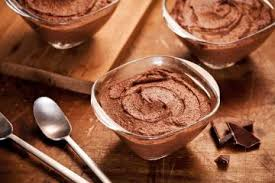
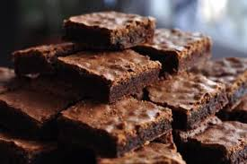

Receitas do Grupinho 
Aqui separamos algumas de nossas receitas preferidas! Preparados para ficar com água na boca?
Nossas Receitas

Pudim Prático
Surpreenda suas visitas com esse delicioso pudim! O que você precisa:
- 1 lata de leite condensado.
- 1 lata de leite (medida da lata de leite condensado).
- 3 ovos inteiros.
- 1 xícara (chá) de açúcar.
- 1/2 xícara de água.
Modo de Preparo:
- Primeiro, bata bem os ovos no liquidificador.
- Acrescente o leite condensado e o leite, e bata novamente.
- Derreta o açúcar na panela até ficar moreno, acrescente a água e deixe engrossar.
- Coloque em uma forma redonda e despeje a massa do pudim por cima.
- Asse em forno médio por 45 minutos, com a assadeira redonda dentro de uma maior com água.
- Espete um garfo para ver se está bem assado.
- Deixe esfriar e desenforme.
Receita obtida neste link.

Mousse de chocolate prático
Faça esse mousse de chocolate perfeito e conquiste o paladar das pessoas! O que você precisa:
- 2 latas de creme de leite.
- 1 Lara de leite condensado.
- 1 pacote de gelatina em pó sem sabor de chocolate em pó.
- 8 colheres oi a seu gosto de chocolate em pó, achocolatado ou outro de sua preferência, fica bom com qualquer um
Modo de Preparo:
- Coloque no liquidificador o creme de leite, o leite condensado e o chocolate em pó.
- Bata por aproximadamente 2 minutos.
- Derreta a gelatina conforme instruções da embalagem e acrescente a mistura, bata por 30 segundos só para misturar.
- Coloque em um recipiente, cubra e leve à geladeira até endurecer.
Receita obtida neste link.

Brownie Prático
Deixe seus convidados com água na boca com esse delicioso brownie! O que você precisa:
- 5 colheres de manteiga.
- 3 ovos.
- 3 xícaras de achocolatado.
- 6 colheres de açúcar.
- 12 colheres de farinha de trigo.
Modo de Preparo:
- Enquanto derrete a manteiga, misture os 3 ovos e a açúcar e misture bem.
- Acrescente a manteiga derretida no ovo e o açúcar.
- Agora é só misturar o achocolatado e o trigo.
- Unte uma forma com manteiga e achocolatado.
- Leve ao forno a 180°C por 30 minutos.
Receita obtida neste link.

Cheesecake de Chocolate
Faça essa sobremesa com apenas 5 ingredientes!
- 450g de creamcheese
- 75g de açúcar
- 10g de café solúvel
- 200g de chocolate (meio amargo, ao leite ou 60-70%, dependendo da sua preferência)
- 3 ovos
Modo de Preparo:
- Pré-aqueça o forno à 250°C por no mínimo 15 minutos.
- Transfira para uma tigela o creamcheese, o açúcar e o café solúvel.
- Incorpore esses ingredientes usando uma batedeira ou um fuê.
- Em seguida adicione os ovos e misture até homogenizar.
- Em um outro recipiente derreta o chocolate em banho maria ou no microondas de 30 em 30 segundos.
- Junte o chocolate derretido com a mistura dos outros ingredientes e mexa até incorporar.
- Transfira mistura para uma forma forrada com papel manteiga e asse por 20-25 minutos à 250°C.
- Deixe esfriar e desenforme.
Receita obtida neste link.